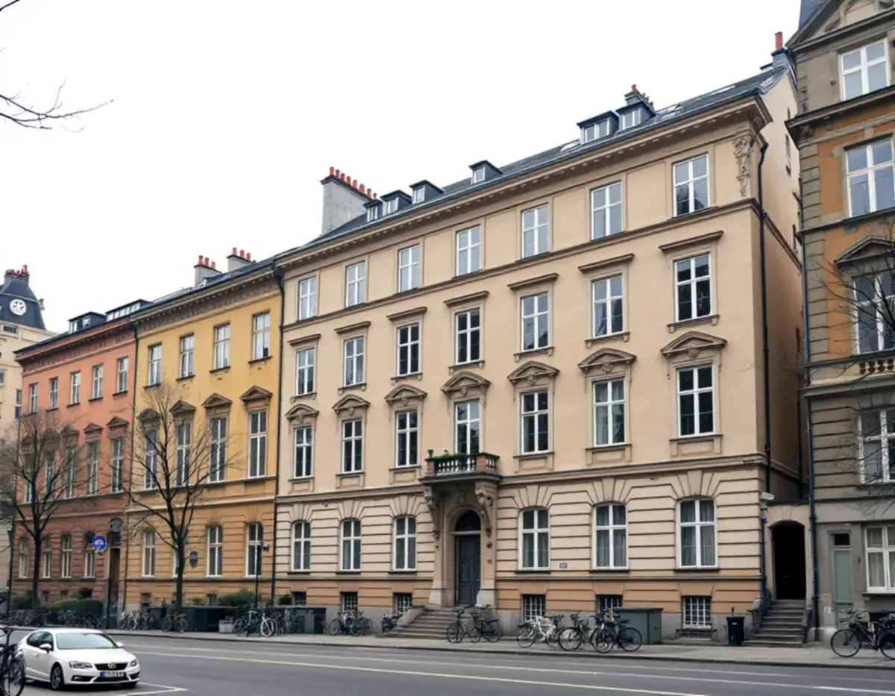
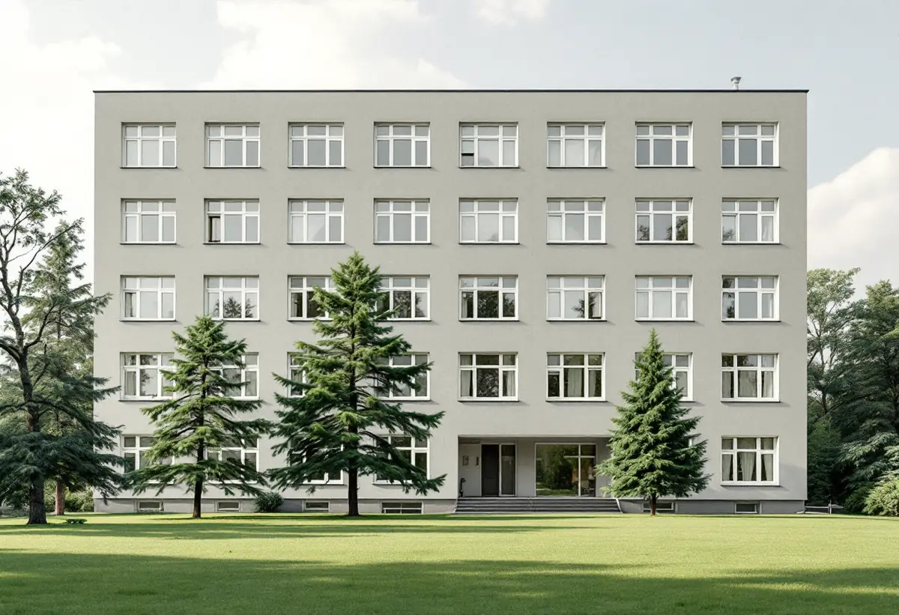
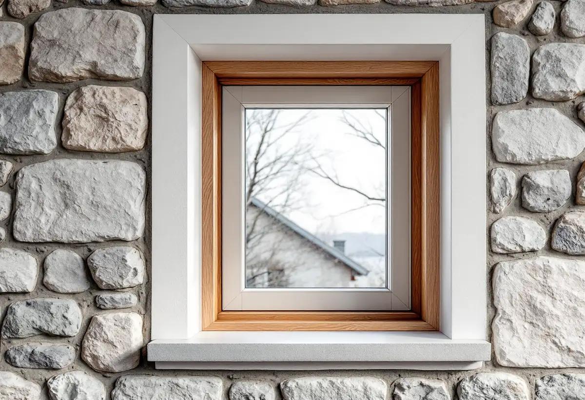

Platsbesök
Vi ser fönstren, fasaderna och husets äldre ritningar tillsammans med styrelsen.
På Kungsholmen gäller ett fönsterbyte i regel ett flerbostadshus, och då är det en fråga för bygglovet och för föreningen, inte bara för snickaren. Geal Entreprenad AB byter fönster i stenhusen kring Hantverkargatan och i funkishusen i Fredhäll och Kristineberg och tar fram underlaget innan något beställs.

Stockholms stad räknar att ändra eller sätta in nya fönster eller dörrar som exempel på lovpliktiga fasadändringar på ett flerbostadshus. Det beror på vilken byggnad och vilken fasad ändringen gäller, och staden bedömer utifrån de ändringar som föreslås i ansökan om de kräver lov och om de uppfyller kraven på utformning.
Som ändring räknar staden bland annat att byta material eller kulör på fönstren, ändra storlek eller placering, flytta ett fönster från fasadlivet till ett indraget läge, ändra dimensioner, proportioner eller profilering på karmar, bågar och spröjsar, byta upphängning från sidohängt till vippfönster eller lägga till eller ta bort spröjs och mittpost. Ett hus kan också ha karaktäristiska fönster eller en tidstypisk indelning, och då påverkar en ändring både fasaden och byggnadens karaktär.

Stadens underlag om riksintressena beskriver den klassiska stenstaden som bebyggelse från 1870 till 1930 på Östermalm, Södermalm, Kungsholmen och Norrmalm. Hyreshusen är normalt fem våningar höga, står vid 18 meter breda gator och har tidstypiska, dekorerade fasader i puts eller natursten. Gatufasadernas tydliga uppdelning i sockelvåning och huvudfasad och husens byggnadsdetaljering räknas till de värdebärande karaktärsdragen.
Omkring 1930 började en ny typ av stadsdelar byggas efter funktionalistiska ideal, och i innerstaden skedde det framför allt i utkanterna, till exempel i Fredhäll och Kristineberg. Där blev fristående huskroppar med öppna gröna gårdar idealet. Fönstren i ett stenhus från 1890-talet och i ett lamellhus från 1930-talet har alltså helt olika förlagor, och det nya fönstret ritas efter det hus det ska sitta i.
Enligt stadens områdesfakta för 2025 finns 30 369 bostadsrätter i flerbostadshus i Kungsholmens stadsdelsområde, mot 272 småhus med äganderätt. I Fredhäll är 2 219 bostäder bostadsrätter och i Kristineberg 3 230. Det är alltså i regel en bostadsrättsförening som byter fönstren, och ofta i hela huset på en gång.
Bostadsrättslagen säger att bostadsrättshavaren håller lägenheten i gott skick om inte stadgarna bestämmer något annat, så det är stadgarna som visar vem som ansvarar för fönstren. Vill du själv ändra något krävs styrelsens tillstånd för en väsentlig förändring av lägenheten, och för en lägenhet med särskilda kulturhistoriska värden krävs tillstånd för varje åtgärd som påverkar ett sådant värde.
Till en ansökan om fasadändring hör en fasadritning i skala 1:100 med material och kulörer angivna i NCS-systemet, antingen på ritningen eller i en separat beskrivning. En detaljritning visar byggnadsdetaljer som fönster i skala 1:10, 1:20 eller 1:50, och fotografierna ska tydligt visa de sidor av huset som berörs. Staden ber också att plan-, fasad- och sektionsritningar stämmer med varandra.
Äldre handlingar som stadsbyggnadskontoret har på fastigheten kan du själv söka fram och skriva ut i Bygg- och plantjänsten. Vi använder dem för att mäta upp de befintliga fönstren och rita de nya med samma indelning. Vill föreningen hellre behålla bågarna kan du läsa om fönsterrenovering på Kungsholmen, och om tjänsten i stort under fönsterbyte.

Vi ser fönstren, fasaderna och husets äldre ritningar tillsammans med styrelsen.
Befintliga karmar, bågar, profiler och indelning mäts och fotograferas.
Tillverkning, montage och efterarbete står var för sig.
Fasadritning, detaljritning, kulörer och foton tas fram för ansökan.
Fönstren byts lägenhet för lägenhet och drevas, tätas och fodras.
Vi går igenom fönstren med föreningen och lämnar skötselråd.
För en bostadsrätt ger Skatteverket inget rotavdrag för att byta fönster eller arbeta mellan och på utsidan av befintliga fönster. Avdrag ges för arbete på insidan, till exempel att byta glaset i den inre bågen, montera tätningslist eller byta innerfönster och fönsterfoder, när det är åtgärder som du ansvarar för enligt stadgarna.
Äger du ett småhus på Kungsholmen gäller andra regler: där ger det rotavdrag att reparera eller byta ut fönster. Avdraget är högst 30 procent av arbetskostnaden och högst 50 000 kronor per person och år.
Antal fönster och fasader, om gatufasaden har en annan indelning än gårdsfasaden, profilerna, glas och beslag, ställning eller lift och om bygglovshandlingar behövs. Efter ett gratis platsbesök får föreningen ett skriftligt kostnadsförslag.
Byta eller renovera fönster.
Fönsterbyte i Stockholm →Takbyte, takbesiktning och plåtarbeten.
Takläggare på Kungsholmen →Plåttak i stenstaden och funkis i Fredhäll.
Takrenovering på Kungsholmen →Gårdshus vid villorna på Stora Essingen.
Attefallshus på Kungsholmen →Stambyte, stämmobeslut och 30-talshus.
Badrumsrenovering på Kungsholmen →Föreningens stambyte.
Byggföretag på Kungsholmen →Målning av puts och gårdsfasader.
Fasadmålning på Kungsholmen →Slätputs på funkishus, lagad utan synliga skarvar.
Fasadrenovering på Kungsholmen →Fönstret i bostadsrätten, insida och beslag.
Fönsterrenovering på Kungsholmen →Stegljud, golvval och styrelsens tillstånd.
Golvläggare på Kungsholmen →Slipa och lacka golvet i bostadsrätten.
Golvslipning på Kungsholmen →Fläkten, kanalen och föreningen.
Köksrenovering på Kungsholmen →Funkislägenheter, stadgar och ROT i bostadsrätten.
Målare på Kungsholmen →Huvar, skorstenar och genomföringar.
Plåtslagare på Kungsholmen →Förvaring och platsbyggt i små lägenheter.
Snickare på Kungsholmen →Villorna på Stora Essingen.
Takbyte på Kungsholmen →Ny tapet på putsade lägenhetsväggar.
Tapetsering på Kungsholmen →Uterum, kupor och skärmtak.
Tillbyggnad på Kungsholmen →Hela lägenheten från golv till tak.
Totalrenovering på Kungsholmen →